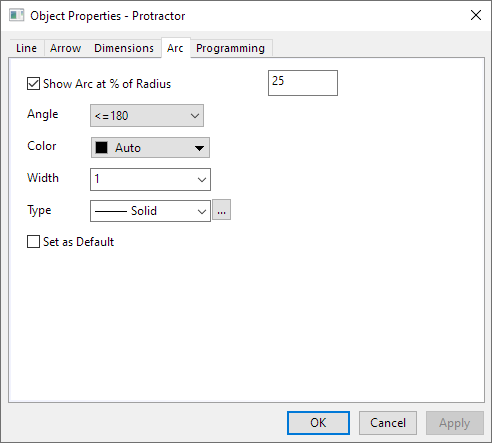

Die Registerkarte Bogen (Objekteigenschaften)
Ob-Prop-Arc-tab
- 
Wenn Sie eine Winkelanmerkung zum Diagramm hinzufügen, können Sie die Anzeige des Borgen auf dieser Registerkarte steuern.
Sie können auf der Registerkarte Bogen die Eigenschaften Radius, Winkel, Farbe, Breite und Typ des Bogens für die Winkelanmerkung festlegen.
- Deaktivieren Sie Bogen bei % des Radius zeigen. Der Bogen wird verborgen.
- Aktivieren Sie das Kontrollkästchen Als Standard festlegen, um diese Registerkarteneinstellungen auf das aktuell ausgewählte Objekt und alle zukünftigen Objekte des gleichen Typs anzuwenden.